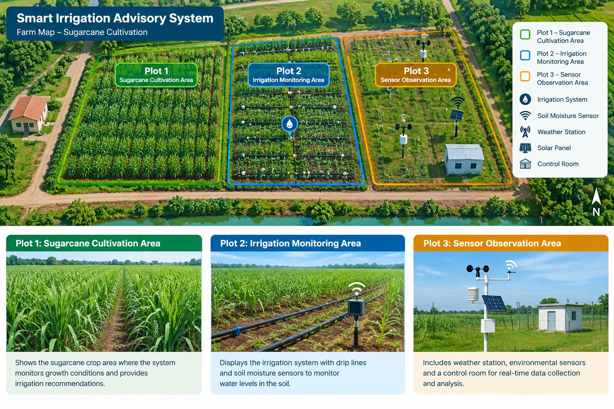

Farm Map and Irrigation Information
The system uses farm images and geographical information to support irrigation planning.

Farm Information
The farm is divided into different plots for monitoring soil moisture and irrigation requirements.
Plot 1: Sugarcane cultivation area
Plot 2: Irrigation monitoring area
Plot 3: Sensor observation area